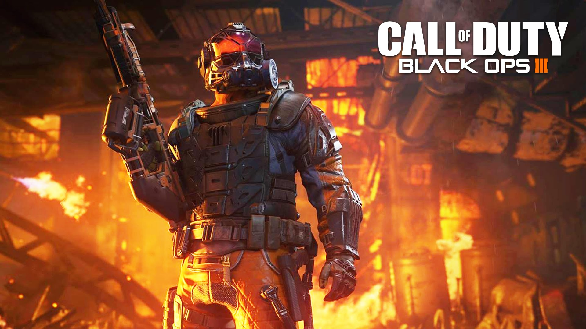
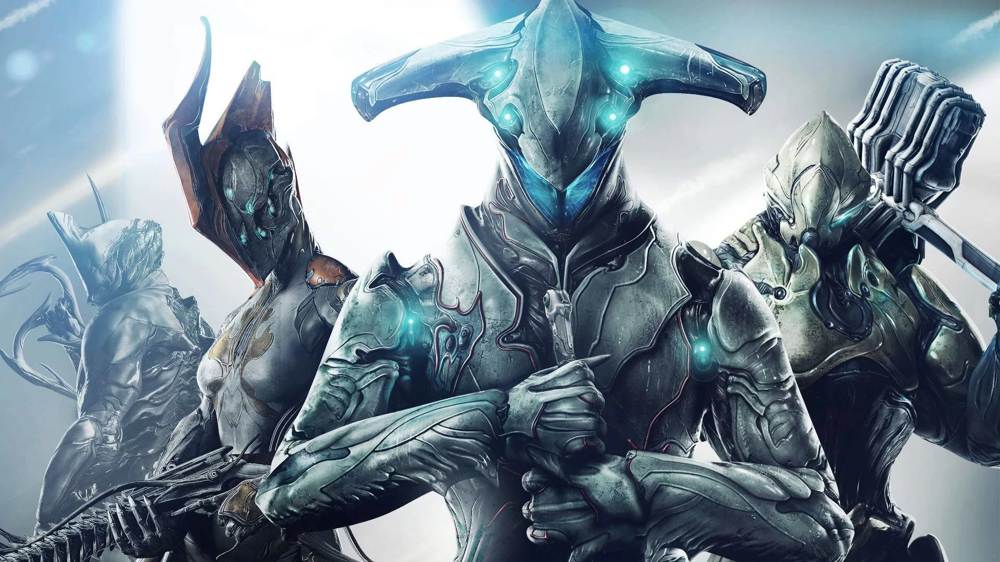
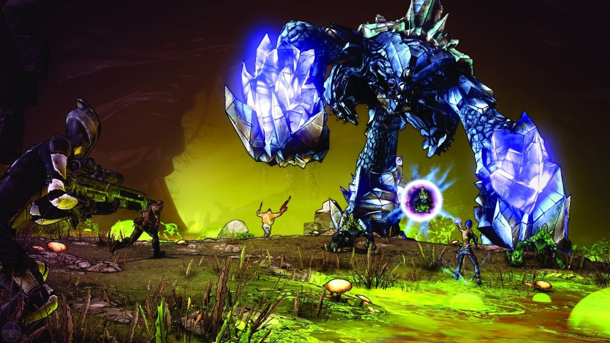

I enjoy playing many video games like Borderlands 2 and its pre-sequel , Warframe, and Call of Duty: black ops 3.
I play on Xbox one or PC, depending on if my family is using the tv in the living
even though there is another tv in my parents room that cannot get anything connected to it but still
has the same channels. (scroll down)


